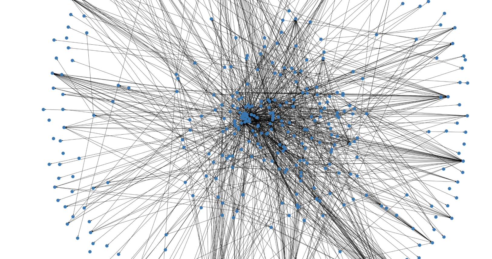
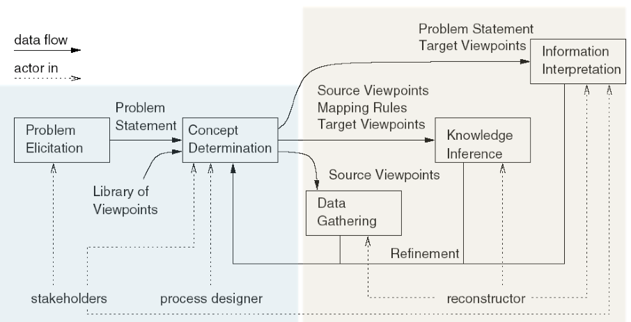

class: center, middle IT University of Copenhagen #### Software Architecture ### Session #10 # Reconstruction (II): Abstraction Assoc. Prof. Mircea Lungu mlun@itu.dk --- ### The *source view* obtained last time  - **System**: Zeeguu-API - **Source View**: Modules & Dependencies - **Entities**: .py files in the project - **Relationships**: import statements between .py files --- ## Refining the source view to simplify it? *Starting from the [Basic Data Gathering](https://colab.research.google.com/drive/1oe_TV7936Zmmzbbgq8rzqFpxYPX7SQHP?usp=sharing) notebook...* **1/ 👨💻 Add labels to the nodes. Do you see irellevant nodes?** -- - the view shows dependencies to external modules - if goal is understanding *this system's structure* ... are they needed? -- 2/ 👨💻 **Filter out the non-system dependencies** *(approx. all that don't start with `zeeguu`)* **Does the graph look better?** -- - Lesson: filtering is an important tool for AR -- **2 / 👨💻 Let's try another [layout from networkx](https://networkx.org/documentation/stable/reference/drawing.html) (e.g. [draw_kamada_kawai](https://en.wikipedia.org/wiki/Force-directed_graph_drawing)**). Can you spot other irellevant modules? -- - tests are also not very relevant - Lesson: layouts are important -- **3 / 👨💻 Filter out tests**. **Does the view look cleaner?** -- *What else can we do here to simplify?* --- # Knowledge Inference / Abstraction [Symphony...](./papers/deursen-symphony.pdf) (Sec. 6.2): "The reconstructor creates the target view by ... - **condensing the low-level details ** of the source view, and - **abstracting them** into architectural information.  "[...] domain knowledge is used to **define a map between the source and target view**." ??? > This activity may require either interviewing the system experts in order to formal- ize architecturally-relevant aspects not available in the im- plementation or to iteratively augment the source view by adding new concepts to the source viewpoint > > -- Symphony, 6.2 --- ## Approach #1: Mapping Using Naming Conventions [..] **if the mapping contains a rule about using naming conventions to combine classes into modules**, the resulting map lists each class and the module to which it belongs." -- Case Study: [**Software Reflexion Models: Bridging the Gap between Design and Implementation**](./papers/murphy-reflexion.pdf), *Murphy et al.* - Ask Linux maintainers to 1. draw dependencies between subsystems (*as-expected* architecture) 2. provide mappings from file names to subsystems - Recover the *[as-implemented](https://youtu.be/E6N8TuqPU6o?t=30)* *module view* - Compare the *as-implemented* architecture with the *as-expected* architecture --- ### Step 1.a. Maintainers draw dependencies between subsystems <img src="./images/reflexion_model_hypothesis.png" style="width:900px"/> From: [Software Reflexion Models: Bridging the Gap ...](./papers/murphy-reflexion.pdf) --- ### Step 1.b. Maintainers provide mappings from file names to subsystems <img src="images/reflexion_model_mappings.png" style="width:100%"/> From: [Software Reflexion Models: Bridging the Gap...](./papers/murphy-reflexion.pdf) --- ### Step 2. Comparing the As-Implemented and the As-Expected Dependencies <img src="./images/reflexion_model_comparison.png" style="width:100%"/> From: [Software Reflexion Models: Bridging the Gap ...](./papers/murphy-reflexion.pdf) --- # Reflexion Model = an architectural viewpoint that indicates **where the source model and high-level model differ** 1. Convergences 1. Divergences 1. Absences Obtaining it is an **iterative process** Repeat 1. Define/Update high-level model of interest 2. Extract a source model 3. Define/Update declarative mapping between high- level model and source model 4. Reflexion model computed by system 5. Interpret the software reflexion model. Until “happy” From: [Software Reflexion Models: Bridging the Gap ...](./papers/murphy-reflexion.pdf) --- ## Approach #2: Using the Folder Hierarchy for Aggregation Developers hierarchically organize files in folders. *Let us use that!* 1. Aggregate nodes 2. Aggregate dependencies 3. Show the aggregated dependencies & nodes Advantages 1. Works for most languages & most systems! 2. Can be used in a MSc thesis :) (e.g. [topic1](https://github.com/mircealungu/student-projects/issues/4), [topic2](https://github.com/mircealungu/student-projects/issues/35)) --- ## Approach #2 - Example from ArgoUML <img src="images/aggregating_dependencies_upwards.png" style="width:100%"/> Two types of dependencies: 1. Explicit 2. Implicit From: [Evolutionary and Collaborative Software Architecture Recovery with Softwarenaut,](https://core.ac.uk/download/pdf/33045731.pdf) by Lungu et al. --- ## Approach #2 - Basic Implementation in Python 👨💻 Code: [Basic Abstraction](https://colab.research.google.com/drive/1ohvPB_SZeDa5NblzxLAkwmTY8JZRBZe_?usp=sharing) --- ## Complementary Tool: Software Metrics A software [metric](https://www.javatpoint.com/software-engineering-software-metrics) is a **measure of software characteristics** which are measurable or countable Types of metrics: 1. Product - measure the resulting product, e.g. source code 2. Process - measure the process, e.g. frequency of change Q: *So how is this a complementary tool?* -- Remember the def of architecture: **"[...] modules, their properties, and the relationships between them"** -- *A: Metrics can express these "properties".* --- ### Product metrics For **Files/Methods** - **Cyclomatic Complexity** (aggregated from file level) - CYCLO - Cyclomatic Complexity ([wiki](https://en.wikipedia.org/wiki/Cyclomatic_complexity)) - number of linearly independent code paths through source code (functions of the number of branches) - often used in quality: too much complexity is a bad thing - hidden partially by polymorphism For **Modules** - **Size** (Aggregated from file level) - LOC - lines of code - NOM - number of methods For **Dependencies** - **Total count** of explicit low-level dependencies - **Number of distinct** explicit low-level dependencies --- ## Augmenting Recovered Views with Metrics Useful in top-down interactive exploration, e.g. Softwarenaut ([video](https://vimeo.com/62767181), [paper](https://core.ac.uk/download/pdf/33045731.pdf)) <img src="./images/polymetric_view_of_argouml.png" style="width:400px"/> e.g., Augmeting nodes and dependencies with metrics in ArgoUML packages with a *polymetric view* 👨💻 Coding Assignment: Compute size metrics, and map them on the nodes in your module view at the end of the [Abstraction](https://colab.research.google.com/drive/1ohvPB_SZeDa5NblzxLAkwmTY8JZRBZe_?usp=sharing) notebook --- ## Approach #3 (research!): Keep Only the Most Essential Elements Based on Network Analysis <img src="images/first_cluster.png" style="float:right" /> e.g. Paper: [Ranking software artifacts](http://scg.unibe.ch/archive/papers/Peri10bRankingSoftware.pdf). by Perin, Renggli, and Ressia - Use the PageRank algorithm of Google - Abstracts by filtering out the less relevant nodes Consider trying it out in your project if you're interested in network analysis! `networkx` supports various methods of network analysis, e.g. [centrality](https://networkx.org/documentation/stable/reference/algorithms/centrality.html#degree), [HITS](https://networkx.org/documentation/stable/reference/algorithms/generated/networkx.algorithms.link_analysis.hits_alg.hits.html), [pagerank](https://networkx.org/documentation/stable/reference/algorithms/generated/networkx.algorithms.link_analysis.pagerank_alg.pagerank.html) ??? - Automatic Clustering - has been tried with - coupling cohesion - natural language analysis - even in the case of clustering we still need human intervention --- ## Importance of Dependencies *To tell a story* we need subjects and actions To tell the story of a module view we need - subjects - the modules in the view - actions - the meanings of the dependencies <img src="./images/top_three_dependencies.png" style="width:300px"/> In your project aim to describe also the reason for the dependencies (at least the most essential ones) --- ## To Think About - Mapping metrics on visualizations helps make sense of the data - Semi-automatic (~*automation with human in the loop*) solutions are always required in Architecture Reconstruction - The difference between the views recovered today and a hand-drawn UML diagram? - what we created today is always telling the truth (*live diagrams*) - but, **maybe not all the truth?** --- # Personalizing your Project - Can you complete the implementation of the import extractor with the missing part? - Can you visualize also dependency metrics with networkx? E.g. a stronger dependency as a thicker arrow? - Consider using `pyvis` instead of `networkx` -- it has much nicer visualizations! - Consider [exporting the data from networkx](https://networkx.github.io/documentation/stable/reference/drawing.html) into specialized graph visualization tools **To Do: start working on your project! Don't leave it all for the last moment!**